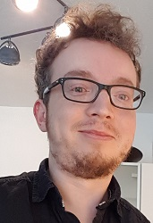

Max Hinne
I am an assistant professor at the Department of Artificial Intelligence, at the Radboud University, Nijmegen, The Netherlands.
There are few objects more interesting than the brain. It has just the right structure and dynamics that results in large-scale information processing, from which our complex cognition emerges and using which it ultimately studies itself.
In my research, I use Bayesian modelling & statistics to study latent (network) structures in the human brain, via neuroimaging modalities such as fMRI and dwMRI, and to use these as predictive models. I am particularly interested in Bayesian nonparametric models (such as Gaussian processes), in which the complexity of the model is learned from data instead of provided a priori. Other, related, interests incude (quasi-)causal inference, predictive processing, and dynamical systems.
My contact information is listed below.
“All stable processes we shall predict. All unstable processes we shall control.”
John von Neumann
Master thesis projects
Interested in doing a master thesis on topics such as applying or developing new Bayesian nonparametric methods to neuroimaging data? Send me an email!
Publications
PhD thesis
On June 9th 2017, I defended my doctoral thesis entitled Bayesian Connectomics: a probabilistic perspective on brain networks with a cum laude distinction.
Papers
- Luca Ambrogioni, Kate Lin, Emily Fertig, Sharad Vikram, Max Hinne, Dave Moore, Marcel Gerven, 2021. Automatic structured variational inference. In: Proceedings of AISTATS 2021, 24.
AISTATS proceedings - Marie Deserno, Denny Borsboom, Sander Begeer, Riet van Bork, Max Hinne, Hilde Geurts, 2020. Highways to happiness for ASD adults? Perceived causal relations among clinicians. PLoS ONE. 15(12), pp. e0243298.
[doi] - David Leeftink and Max Hinne, 2020. Spectral discontinuity design: Interrupted time series with spectral mixture kernels In: Proceedings of the Machine Learning for Health (ML4Health) Workshop at NeurIPS 2020.
[PMLR proceedings] - Patrick Dallaire, Luca Ambrogioni, Ludovic Trottier, Umut Güçlü, Max Hinne, Philippe Giguère, Brahim Chaib-Draa, Marcel van Gerven and Francois Laviolette, 2020. The Indian Chefs Process. In: Proceedings of UAI 2020, Toronto, Canada.
[UAI proceedings] - Max Hinne, Quentin Gronau, Don van den Bergh and Eric-Jan Wagenmakers, 2020. A conceptual introduction to Bayesian model averaging. Advances in Methods and Practices in Psychological Science (AMPPS) 3(2), pp. 200-215.
[doi] - Max Hinne, Marcel van Gerven and Luca Ambrogioni, 2019. Causal inference using Bayesian non-parametric quasi-experimental design.
[preprint] [code] - Karen Ambrosen, Simon Eskildsen, Max Hinne, Kristine Krug, Henrik Lundell, Mikkel Schmidt, Marcel Van Gerven, Morten Mørup and Tim Dyrby, 2020. Validation of structural brain connectivity networks: the impact of scanning parameters. NeuroImage 204, pp. 116207.
[doi] - Nadine Dijkstra, Max Hinne, Sander Bosch, Marcel van Gerven, 2019. Individual differences in the influence of mental imagery on conscious perception. Scientific Reports 9 (15658).
[doi] - Alexander Ly, Angelika Stefan, Johnny van Doorn, Fabian Dablander, Don van den Bergh, Alexandra Sarafoglou, Simon Kucharský, Koen Derks, Quentin Frederik Gronau, Akash Raj, Udo Boehm, Erik-Jan van Kesteren, Max Hinne, Dora Matzke, Eric-Jan Wagenmakers, 2019. The Bayesian methodology of Sir Harold Jeffreys as a practical alternative to the p-value hypothesis test.
[preprint] - Johnny van Doorn, Don van den Bergh, Udo Bohm, Fabian Dablander, Koen Derks, Tim Draws, Nathan J Evans, Quentin Frederik Gronau, Max Hinne, Simon Kucharský, Alexander Ly, Dora Matzke, Akash Raj, Alexandra Sarafoglou, Angelika Stefan, Jan G Voelkel, Eric-Jan Wagenmakers, 2019. The JASP guidelines for conducting and reporting a Bayesian analysis.
[preprint] - Fabian Dablander and Max Hinne, 2019. Node Centrality measures are a poor substitute for causal inference. Scientific Reports. 9:6846, pp. 1-10.
[doi] [preprint] - Luca Ambrogioni, Patrick Ebel, Max Hinne, Umut Güçlü, Marcel van Gerven and Eric Maris, 2019. Semi-analytic nonparametric Bayesian inference for spike-spike neuronal connectivity. In: Proceedings of AISTATS 2019, 22, Okinawa, Japan.
[AISTATS proceedings] - Luca Ambrogioni, Umut Güçlü, Julia Berezutskaya, Eva van den Borne, Yagmur Güçlütürk, Max Hinne, Eric Maris and Marcel van Gerven, 2019. Forward amortized inference for likelihood-free variational marginalization. In: Proceedings of AISTATS 2019, 22, Okinawa, Japan.
[AISTATS proceedings] - Max Hinne, Ronald Janssen, Reza Mohammadi, 2018. Contributed comment on article by Bezener, Hughes and Jones. In Bayesian Analysis. 13 (4), pp. 1304-1305.
[doi] - Luca Ambrogioni, Umut Güçlü, Yagmur Güçlütürk, Max Hinne, Eric Maris and Marcel van Gerven, 2018. Wasserstein variational inference. In: Advances in Neural Information Processing Systems (NIPS'18), 31.
[NIPS proceedings] - Luca Ambrogioni, Max Hinne, Marcel van Gerven and Eric Maris, 2017. GP CaKe: Effective brain connectivity with causal kernels. In Advances in Neural Information Processing Systems (NIPS'17), 30, pp. 951-960.
[NIPS proceedings] [code] - Max Hinne, Annet Meijers, Rembrandt Bakker, Paul Tiesinga, Morten Mørup and Marcel van Gerven, 2017. The missing link: predicting connectomes from noisy and partially observed tract tracing data. PLoS Computational Biology, 13(1), pp. e1005374.
[doi] - Marloes Janssen, Max Hinne, Ronald Janssen, Marcel van Gerven, Stefan Steens, Bozena Góraj, Peter Koopmans and Roy Kessels, 2016. Resting-state subcortical functional connectivity in HIV-infected patients on long-term cART. Brain Imaging and Behaviour, 11(5), pp. 1555-1560.
[doi] - Max Hinne, Ronald Janssen, Tom Heskes and Marcel van Gerven, 2015. Bayesian estimation of conditional independence graphs improves functional connectivity estimates. PLoS Computational Biology, 11(11), pp. e1004534.
[doi] - Max Hinne, Matthias Ekman, Ronald Janssen, Tom Heskes and Marcel van Gerven, 2015. Probabilistic clustering of the human connectome identifies communities and hubs. PLoS ONE 10(1), pp. e0117179.
[doi] [code] [data] - Max Hinne, Alex Lenkoski, Tom Heskes and Marcel van Gerven, 2014. Efficient sampling of Gaussian graphical models using conditional Bayes factors. Stat 3, pp. 326-336.
[doi] [preprint] [code] - Ronald Janssen, Max Hinne, Tom Heskes and Marcel van Gerven, 2014. Quantifying uncertainty in brain network measures using
Bayesian connectomics. Frontiers in Computational Neuroscience 8 (126).
[doi] - Max Hinne, Luca Ambrogioni, Ronald Janssen, Tom Heskes and Marcel van Gerven, 2014. Structurally-informed Bayesian functional connectivity analysis. NeuroImage 68, pp. 294-305.
[doi] [preprint] [code] - Max Hinne, Tom Heskes, Christian Beckmann and Marcel van Gerven, 2013. Bayesian inference of structural brain networks. NeuroImage 66, pp. 543-552.
[doi] [preprint] [code] - Max Hinne, Tom Heskes and Marcel van Gerven, 2013. Bayesian inference of whole-brain networks. arXiv:1202.1696. Bayesian Connectomics project proposition.
[arXiv] - Suzan Verberne, Maarten van der Heijden, Max Hinne, Maya Sappelli, Eduard Hoenkamp, Saskia Koldijk and Wessel Kraaij, 2013. Reliability and validity of query intent assessments. JASIST 64(11), pp. 2224-2237.
[doi] [*Best paper award*] - Maya Sappelli, Suzan Verberne, Maarten van der Heijden, Max Hinne, Wessel Kraaij, 2012. Collecting ground truth data for query intent. In: Proceedings of the Dutch-Belgium Information Retrieval workshop (DIR 2012).
[pdf] - Max Hinne, Maarten van der Heijden, Suzan Verberne, Wessel Kraaij, 2011. A multi-dimensional model for search intent. In: Proceedings of the Dutch-Belgium Information Retrieval workshop (DIR 2011).
[pdf] - Max Hinne and Elena Marchiori, 2011. Cutting graphs using competing ant colonies and an edge clustering heuristic. In: Proceedings of EvoCOP'11, Turin, Italy, pp. 60-71.
[pdf] - Suzan Verberne, Max Hinne, Maarten van der Heijden, Eduard Hoenkamp, Wessel Kraaij and Theo van der Weide, 2010. How does the library searcher behave? A aontrastive study of library search against ad-hoc search. In: Proceedings of the Conference on Multilingual and Multimodal Information Access Evaluation (CLEF 2010), logCLEF workshop
[pdf] - Maarten van der Heijden, Max Hinne, Suzan Verberne, Eduard Hoenkamp, Theo van der Weide and Wessel Kraaij, 2010. When is a query a question? Reconstructing wh-requests from ad hoc-queries. In: Proceedings of the Query Representation and Understanding workshop (QRU) in conjunction with SIGIR 2010, pp. 17-20.
[pdf] - Suzan Verberne, Max Hinne, Maarten van der Heijden, Eva D'hondt, Wessel Kraaij and Theo van der Weide, 2009. Annotating URLs with query terms: what factors predict reliable annotations? In: Proceedings of the Understanding the User workshop (UIIR) in conjunction with SIGIR 2009.
[pdf] - Max Hinne, Maarten van der Heijden, Wessel Kraaij, Stephan Raaijmakers, Suzan Verberne and Theo van der Weide, 2009. Annotation of URLs: more than the sum of parts. In: Proceedings of SIGIR 2009, Boston, MA, USA, pp. 632-633.
[pdf] - Maarten van der Heijden, Max Hinne, Wessel Kraaij, Suzan Verberne and Theo van der Weide, 2009. Using query logs and click data to create improved document descriptions. In: Proceedings of the 2009 workshop on Web Search Click Data, New York, NY, USA, pp. 64-67.
[pdf] - Max Hinne, 2007. Local Identification of Web Graph Communities. In: Proceedings of ICTIR 2007, Budapest, Hungary, pp. 261-278.
[pdf]
Software
BaCon
The Bayesian Connectomics Toolbox contains Matlab/MEX scripts that implement MCMC approximations for:
- Structural connectivity using dMRI probabilistic streamline count data, using either a prior on network density (struc_conn_density_prior.m) or on clustering (struc_conn_irm_prior.m).
- Functional connectivity using fMRI BOLD time courses data and a structural connectivity estimate (gwishrnd.m).
- Simultaneous estimation of structural and functional connectivity based on fMRI BOLD (ggm_gwish_cbf_direct.m).
Basic usage of each of the scripts is demonstrated in demo.m. Feel free to email me with any questions or comments.
Latent space modeling
Matlab code and Stan models are available for the latent space model that was used for link prediction. Running the sample requires that you have Stan and the MatlabStan interface installed.
GP CaKe
Code for the causal inference / effective connectivity estimation using GP CaKe is available here. There is a tutorial for GP CaKe in the form of a series of blog post, which you can read on the MindCodec website.
Contact information
Online
- m.hinne@donders.ru.nl
- http://nl.linkedin.com/in/mhinne
- Skype
- max.hinne
- Google Scholar
- Max Hinne
Offline
Nijmegen
- Phone
+31-24-3612554
- Visiting Address AI
Room MM 02.353
Thomas van Aquinostraat 4
6525 HR Nijmegen
 The Bayesian party parrot approves.
The Bayesian party parrot approves.